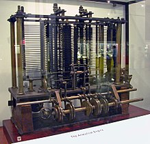
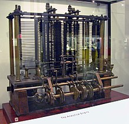

Em junho de 1829, Ada ficou paralisada após contrair sarampo, foi obrigada a ficar de repouso em sua cama por quase um ano, o que afetou sua capacidade de andar. Em 1831, a menina se locomovia com o uso de muletas. Mesmo após ter tido sequelas devido à doença, Ada conseguiu desenvolver suas habilidades. Apesar da condição, a menina continuava a estudar, pois com o objetivo de acabar com quaisquer sinais de insanidade herdados de seu pai Lord Bryon, a mãe de Ada se certificou que a criança aprendesse matemática desde cedo. Ada foi educada em casa, aprendia matemática e ciências com William Frend, William King e Mary Somerville.
Educação
Vida Adulta
Ada tornou-se amiga próxima de sua tutora Mary Somerville, que a apresentou para Charles Babbage em 1833. Ela respeitava e adorava Mary, as duas trocaram cartas por muitos anos. Dentre outros conhecidos de Ada estavam os cientistas Andrew Crosse, Sir David Brewster, Charles Wheatstone, Michael Faraday e o autor Charles Dickens. Aos dezessete anos foi apresentada à Corte e ficou conhecida por sua mente brilhante. Em 1834 Ada já frequentava a Corte com frequência e passou a participar de vários de seus eventos. Dançava com frequência e encantava as pessoas com seu charme e era vista como uma moça delicada.
Onde tudo começou
Na juventude, seus talentos matemáticos levaram-na a uma relação de trabalho e de amizade com o colega matemático britânico Charles Babbage e, em particular, o trabalho de Babbage sobre a Máquina Analítica. Entre 1842 e 1843, ela traduziu um artigo do engenheiro militar italiano Luigi Federico Menabrea sobre a máquina e complementou com um conjunto de sua própria autoria, que ela chamou de Anotações. Essas notas contêm um algoritmo criado para ser processado por máquinas, o que muitos consideram ser o primeiro programa de computador.
 

O primeiro programa de computador
Em 1842, Charles Babbage foi convidado a ministrar um seminário na Universidade de Turim sobre sua máquina analítica. Luigi Menabrea, um jovem engenheiro italiano e futuro Primeiro-ministro da Itália, publicou a palestra de Babbage em francês e esta transcrição foi posteriormente publicada na Bibliothèque Universelle de Genève, em 1842.Babbage pediu a Lovelace para traduzir o artigo de Menabrea para o inglês, adicionando depois a tradução com as anotações que ela mesma havia feito. Lovelace levou grande parte do ano nesta tarefa. Estas notas, que são mais extensas que o artigo de Menabrea, foram então publicados no The Ladies' Diary e no Memorial Científico de Taylor sob as iniciais "AAL".Em 1953, mais de cem anos depois de sua morte, as notas de Lovelace sobre a máquina analítica de Babbage foram republicadas. A máquina foi reconhecida como um primeiro modelo de computador e as notas de Lovelace como a descrição de um computador e um software. As notas de Lovelace foram classificadas alfabeticamente de A a G. Na nota G ela descreve o algoritmo para a máquina analítica computar a Sequência de Bernoulli. É considerado o primeiro algoritmo especificamente criado para ser implementado num computador, e Lovelace é recorrentemente citada como a primeira pessoa programadora por esta razão. No entanto, a máquina analítica de Babbage jamais foi construída, tendo apenas a sua precursora a máquina diferencial sido montada em um trabalho que começou em 1984 por Allan G. Bromley professor da Universidade de Sydney junto com Doron Swade (The London Sience Museum), onde esses levaram 18 anos para finaliza-la.
Aprofunde um pouco mais: